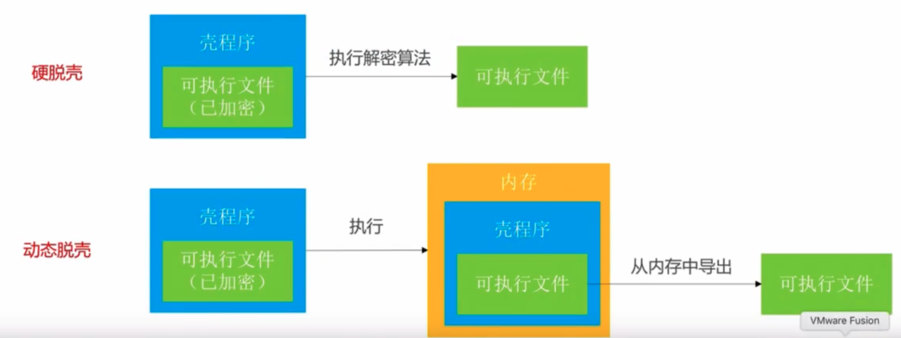

脱壳
一、加壳
上传至Apple Store的应用，会被加密，无法正常查看Mach-O信息，需要脱壳
二、脱壳工具
- 脱壳的两种方法：硬脱壳和动态脱壳

- 如何检查Mach-O是否已经脱壳
查看LC中的LC_ENCRyPTION_INFO中的Crypt ID，如果等于0则未加密
2.1 砸壳工具dumpdecrypted
- 下载源码，修改
makefile
## 这里指定越狱设备的架构
GCC_UNIVERSAL=$(GCC_BASE) -arch armv7 -arch armv7s -arch arm64改成 GCC_UNIVERSAL=$(GCC_BASE) -arch arm64
## 这里指定越狱设备的版本号
## 网上也有其他操作，下载对应设备版本的Xcode
CFLAGS = 改成CFLAGS = -target arm64-apple-ios12.4
make，生成dumpdecrypted.dylib- 用
codesign和个人调试证书给dumpdecrypted.dylib签名
# 查找可用的证书，然后用找到的证书签名
security find-identity -v -p codesigning
codesign --force --verify --verbose --sign "找到的可用证书名称" dumpdecrypted.dylib
遇到的错误
Killed: 9
# 切换mobile用户：su mobile
# 或者
# dumpdecrypted.dylib未签名，参考上面步骤进行重签名
dyld: warning: could not load inserted library 'dumpdecrypted.dylib' into hardened process because no suitable image found. Did find:
dumpdecrypted.dylib: file system sandbox blocked mmap() of 'dumpdecrypted.dylib'
2021-02-23 10:54:50.669 brush_free[1563:120502] Checking for file at /var/mobile/Containers/Data/Application/D627C61F-4A0C-4DA3-978D-BD710C904571/Library/Caches/flex-extract.signal
2021-02-23 10:54:50.686 brush_free[1563:120502] FLXX Error: Couldn't get contents of file: /var/mobile/Library/Application Support/Flex3/patches.plist
Abort trap: 6
# 未将dylib放到/usr/lib/目录下
# 新版iOS不支持将dylib放在.app或Documents目录下来注入
dyld: Symbol not found: ___chkstk_darwin
# dumpdecrypted.dylib对应的SDK版本号不对，修改makefile重新编译或者下载对应版本的Xcode
2.2 class-dump
可以将Objective-C编写的二进制文件反编出头文件，需要是已砸壳的二进制文件。
MonkeyDev/class-dump：支持swift和oc混编
遇到的错误
Error: Cannot find offset for address 0x40000000010053e2 in stringAtAddress:
# 项目中存在Swift，使用其他改版的class-dump
2.3 Hopper
目标文件代码分析
三、脱壳-dumpdecrypted-硬脱壳
1）越狱手机上下载要破解的应用
2）在mac上ssh远程到越狱手机
# Mac
# 密码默认alpine
$ ssh root@10.94.51.82
root@10.94.51.82's password:
Cchukou:~ root#
3）运行app，ps查看进程信息，查找破解App的bundle地址
# iPhone
Cchukou:~ root# ps -e | grep brush
1492 ?? 1:18.02 /var/containers/Bundle/Application/EA717F2A-A0F7-4988-BA96-95B5830539B0/brush_free.app/brush_free
1532 ttys000 0:00.01 grep brush
一些其他操作：
- 导出app包
# Mac
scp -r root@10.94.51.82:/var/containers/Bundle/Application/EA717F2A-A0F7-4988-BA96-95B5830539B0/brush_free.app .
- 代码查看手机上安装的所有应用的bundle id，使用了私有api，需要在越狱机上使用
#import <objc/runtime.h>
// 获取安装app 的bundle id
Class LSApplicationWorkspace_class = NSClassFromString(@"LSApplicationWorkspace");
NSObject *workspace = [LSApplicationWorkspace_class performSelector:@selector(defaultWorkspace)];
NSArray *arrAPP = [workspace performSelector:@selector(allApplications)];
NSLog(@"arrAPP: %@", arrAPP);
4）cycript寻找app的沙盒Documents具体路径 ，Ctrl+D退出cycript
# iPhone
Cchukou:~ root# cycript -p brush_free
cy# NSSearchPathForDirectoriesInDomains(NSDocumentDirectory, NSUserDomainMask, YES)[0]
@"/var/mobile/Containers/Data/Application/D627C61F-4A0C-4DA3-978D-BD710C904571/Documents"
5）使用scp指令把dumpdecrypted.dylib拷贝到/usr/lib/，老一点的系统版本可能需要放到Documents下
# Mac
$ scp -r dumpdecrypted.dylib root@10.94.51.82:/usr/lib
6）切换mobile用户(旧版本可能不需要)
# iPhone
$ su mobile
7）执行dumpdecrypted砸壳，这里是在Documents路径下操作，砸壳后会将dump放到此文件夹下，可在任意文件夹下操作
# iPhone
Cchukou:~/Containers/Data/Application/D627C61F-4A0C-4DA3-978D-BD710C904571/Documents mobile$ DYLD_INSERT_LIBRARIES=/usr/lib/dumpdecrypted.dylib /var/containers/Bundle/Application/EA717F2A-A0F7-4988-BA96-95B5830539B0/brush_free.app/brush_free
mach-o decryption dumper
DISCLAIMER: This tool is only meant for security research purposes, not for application crackers.
[+] detected 64bit ARM binary in memory.
[+] offset to cryptid found: @0x100a05028(from 0x100a04000) = 1028
[+] Found encrypted data at address 00004000 of length 6275072 bytes - type 1.
[+] Opening /private/var/containers/Bundle/Application/EA717F2A-A0F7-4988-BA96-95B5830539B0/brush_free.app/brush_free for reading.
[+] Reading header
[+] Detecting header type
[+] Executable is a plain MACH-O image
[+] Opening brush_free.decrypted for writing.
[+] Copying the not encrypted start of the file
[+] Dumping the decrypted data into the file
[+] Copying the not encrypted remainder of the file
[+] Setting the LC_ENCRYPTION_INFO->cryptid to 0 at offset 1028
[+] Closing original file
[+] Closing dump file
Cchukou:~/Containers/Data/Application/D627C61F-4A0C-4DA3-978D-BD710C904571/Documents mobile$ ls
brush_free.decrypted
8）将生成的.decrypted导出
# Mac
$ scp root@10.94.51.82:/var/mobile/Containers/Data/Application/D627C61F-4A0C-4DA3-978D-BD710C904571/Documents/brush_free.decrypted .
四、class-dump
可使用class-dump导出可执行文件的头文件
1）使用class-dump导出头文件
class-dump -H brush_free.decrypted -o brush_header
五、frida-ios-dump一键脱壳
1）Mac安装frida
$ sudo pip install frida
2） 下载frida-ios-dump
3）进入frida-ios-dump，安装依赖，可能会出现错误，可先不用管，部分库未下载下来可在后面根据提示在进行安装
sudo pip install -r requirements.txt --upgrade
4）使用iproxy映射端口
$ iproxy 10010 22
5）修改frida-ios-dump中的dump.py文件的端口配置
Port = 10010
6）手机Cydia中安装frida
# 打开Cydia->软件源->编辑->添加，输入build.frida.re，添加软件源后，搜索安装Frida即可，注意Frida对应的Cpu型号
7）frida-ios-dump工程中执行dump
$ ./dump.py com.tencent.xin
Start the target app com.tencent.xin
.....
Generating "微信.ipa"
# 如果报错 ImportError: No module named 'xxx'
# sudo pip install 'xxx'